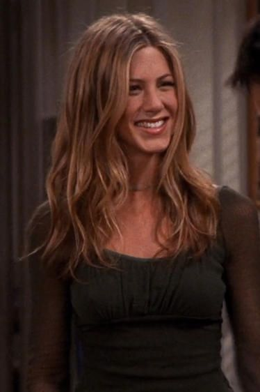

The characters are monica geller, rachel green, ross geller, joey tribbinanie, chandler bing and phoebe buffay. On this page we will be talking about all the main characters indivible. What makes the chacaters even more fun is that they all have there own catch phrases.
Monica Geller (I knowwww)

monica Geller is one of the main characters. She is the younger sister of Ross Gelller an other main character of the show. Monica is for sure the mom of the friend group. She likes to clean, cook and have game nights but she is vry competitive. At the beginning of the show she worked at a restaurant, trough the show she loses her job but then later on gets her own restaurant.
All through Monica's life she has been kinda bad at relationships and after ending a important relationship after knowing it wouldn't go anywhere, she thought she would never find love but she finds her soulmate after all get's married, adopods children and has a happy life.
Rachel Green (noooooo)
Rachel Green is the queen, the girly girl of the group. She appears in the second scene after running away form a loveless wedding and marraige. Monica and Rachel are middle and high school friends. So after running away Rachel seeks out her old friend and later moves in with her in order to get away from het parents. Who still want her to marry the man she rn away from.
Phoebe Buffay (ohh no)

Phoebe is the funniest female member of the group. She plays the guitar and enjoys singing. Besides this she makes hilarious songs. The most famous one is Smelle Cat. Phoebe was an old roommate of Monica but now she lives on her own further away. She is a vegatarion and is kind of a hippy who believes in fate, horoscopes and destiny. She has the worst childhood of the group. Her mom killed herself when Phoebe and her twin sister were only fourteen but besides this she has a sweet, kind and above all a funny character.
Phoebe is the one of the characters who bring life and fun to show more than the others. Even though she originally was supposed to be a supporting character, which is unthinkable when you hav seen the show.
Joey Tribbiani (how you doin')
Joey Tribbiani is for the guy in th group who can get every girl he wants. Yet has he a very sweet, kind and soft character and in a way he is innocent.